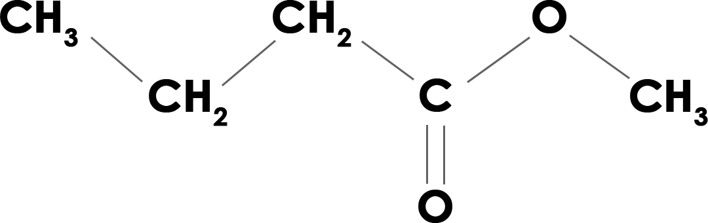

Fórmula: C5H10O2
Nombre IUPAC: Butanoato de metilo.
Tipo de compuesto: Éster.
Tipo de enlace: Covalente, ya que los ésteres están compuestos por elementos no metálicos. La mayoría son enlaces covalentes simples, aunque se observa un enlace covalente doble entre un carbono y uno de los átomos de oxígeno.
Punto de fusión: -95 º C
Punto de ebullición: 102 º C
Estado del éster a temperatura ambiente: Líquido.